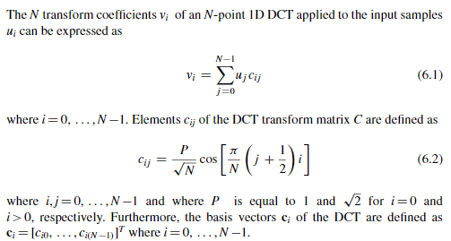
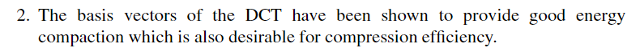
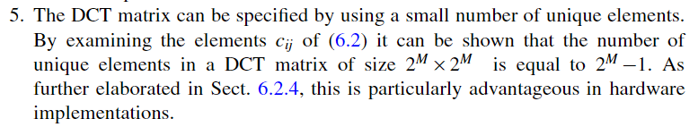
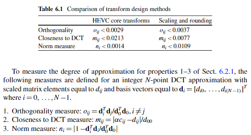
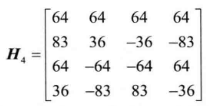
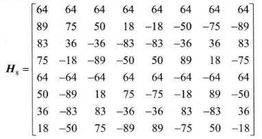
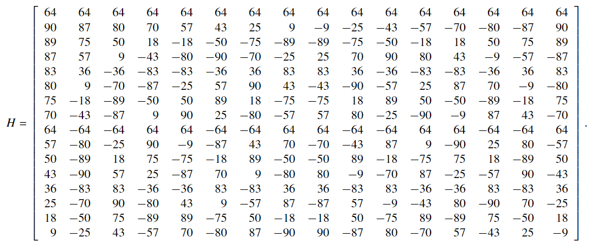
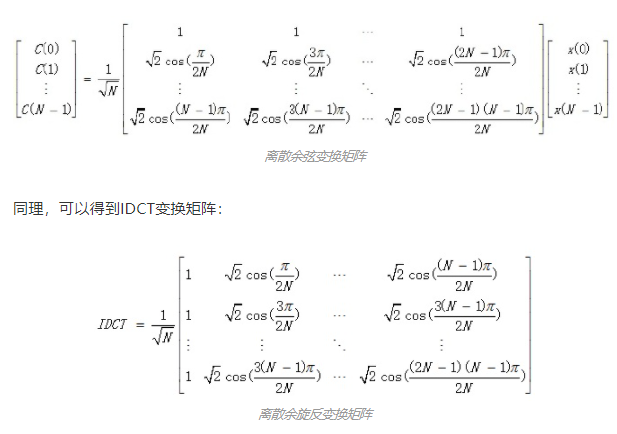

HEVC 的基本介绍
1. HEVC
1.1 简介
HEVC 全称 High Efficiency Video Coding，中文名为高效率视频编码，是目前广泛使用的一种视频编码标准，也被称为 H.265，在 2013 年 正式启用 (成为国际标准) 。在 HEVC 之前流行的视频编码标准是 H.264 标准 (又称为 MPEG-4 AVC) ，在 HEVC 之后将要推广的视频编码标准是 H.266 标准 (又称为 VVC，此标准于 2020 年 7 月 6 日确定)
H.264 维基百科: 网址
H.265 维基百科: 网址
H.266 维基百科: 网址
1.2 制定组织
HEVC 由来自 ISO/IEC 的 MPEG 小组和来自 ITU-T 的 VCEG 小组共同组成的 JCT-VC 小组制定
国际电信联盟 (ITU) 主要负责确定国际无线电和电信的管理标准，为联合国 15 个专门机构之一，其下属的电信标准化部门 (ITU-T) 为 ITU 提出的国际标准的主要制定者，电信标准化部门 (ITU-T) 下属的视频编码专家组 (ITU-T VCEG) 参与了多个视频编码协议的制定，包括 H.261，H.263，H.264，H.265 等
国际标准化组织 (ISO) 是主要负责制定国际工商业标准的非政府组织，其与同属非政府组织的国际电工委员会 (IEC) 合作密切，后者主要负责电子电工相关行业的标准制定。ISO 与 IEC 共同成立的动态影像专家小组 (MPEG) 参与了 MPEG 系列视频标准的制定，包括 MPEG-1，MPEG-2，MPEG-4 等
1.3 复杂度
HEVC 以编解码复杂度提升为代价实现了相对 H.264 的更大压缩性能，在相同画质下码率能够降低 50%
于此相同，H.266 同样以编解码复杂度提升为代价实现了相对 HEVC 的压缩性能提升 (压缩率提升 30%~50%) ，有观点认为，以上方法的性能提升本质上是计算机计算性能的提升，即摩尔定律在视频编码领域的体现，更多的晶体管数量意味着更强的计算能力，更强的计算能力意味着可以支持更加复杂的编解码方法，而更加复杂的编解码方法带来了更大的压缩率提升。视频编码方案的不断演进似乎是以摩尔定律的永不实效为前提的，如果摩尔定律走到极限，如何在给定的复杂度下继续优化降低视频码率，可能将会成为视频编码发展的一个主要方向。
1.4 资源
HEVC 的官方网站：地址
从中可以得到以下资源：
- HEVC 的官方开源编解码器 HM (HEVC Test Model) ：地址
- ITU-T H.265 官方文档：地址
- HEVC 通用测试环境 (指用来测试编解码效果的程序配置和视频序列) 说明：地址
其它有用资源有：
- HEVC 通用测试环境中的视频序列下载：地址
- 码流分析软件 Elecard HEVC Analyzer 下载：地址
- 开源 YUV 视频查看器 YUView 下载：地址
- 参考论文：Overview of the High Efficiency Video Coding(HEVC) Standard
- 参考书籍：新一代高效视频编码H.265HEVC原理、标准与实现 [万帅，杨付正 编著] 2014年版
- 参考书籍：High Efficiency Video Coding (HEVC): Algorithms and Architectures
2. 补充笔记
2.1 视频编码
视频编码就是视频压缩，进行视频编码的原因有二
-
视频需要压缩，未经压缩的视频体积过大
以 此网站 所举的例子为例，分辨率 1920x1080，帧率 30 的真彩色视频，如果不经过压缩，每秒大小为 186.6MB，90 分钟视频大小将达到 984GB，接近 1TB 量级
-
视频能够压缩，视频中的图片存在空间冗余性和时间冗余性
空间冗余性是指，视频中的单张图片中不同空间区域存在相似性，可以只传输此图片的某一块区域，将其复制得到此图片的其它区域
时间冗余性是指，视频中的多张图片中不同空间区域存在相似性，因此同样可以只传输某一图片的某一块区域，将其复制得到其它图片其它区域
在使用 HEVC 提供的官方编解码器 HM 的编码部分进行的实验中，只利用空间冗余性可以达到 30~90 倍的压缩率，同时利用空间冗余性和时间冗余性可以达到 800~1000 倍的压缩率，一部 2.89 GB 原始格式 (YUV 420) 视频可以被压缩成 3.3MB
2.2 发展历程
视频编码标准的发展示意图如下 (图片来源维基百科)

HEVC 的基本流程
1 基本流程
1.1 流程示意图
HEVC 编码基本流程示意图如下（图来自 1.HEVC 的基本介绍 中提到的英文书）

1.2 流程概述
HEVC 的具体流程为首先对图片进行分块操作，然后以块为单位对图片进行帧内编码或帧间编码，然后进行帧内编码预测或帧间编码预测得到图片的第一次重建图像（称为预测图像），拿图片原图减去第一次重建图像得到残差，将残差进行DCT变换、量化再进行反 DCT 变换得到重建残差，将第一次重建图像加上重建残差得到第二次重建图像，第二次重建图像进行环路滤波（in-loop filter）得到得到第三次重建图像（称为重建图像），第三次重建图像是最终解码的结果，将其存入 buffer 用作编码顺序之后帧帧间编码的参考，编码中产生的帧内/帧间编码的数据和残差（以及其它控制信号）则经过熵编码之后作为编码输出，之后帧的编码过程与此相同
由图可知，HEVC 的编码器中嵌套了一个完整的解码器
2 补充笔记
2.1 混合编码
HEVC 使用基于块的混合编码技术，混合是指其同时使用了预测编码和变换编码的技术，预测编码指其利用时域和空域的邻近像素预测当前像素值，之后传输实际值与预测值之差（残差），变换编码指其对残差执行了 DCT 变换，传输其量化后的非零 DCT 系数
混合编码 百度百科: 地址
预测编码 维基百科: 地址
变换编码 维基百科: 地址
2.2 残差
为什么要使用残差？
因为条件熵 \( H(Z|X,Y) \) 总是小于等于非条件熵 \( H(Z) \) （证明见信息论第二讲 pdf 第 35 页，互信息非负），所以残差所含的信息要比原信号所含的信息要少（因为求取残差的过程用到了时域或空域邻近的像素块进行预测，也就是“已知条件”），所以残差能用更少的比特进行表示
注：条件熵有两种，一种是 \( H(Z|Y=y) \)，一种是 \( H(Z|Y) \)，前者不一定小于非条件熵 \( H(Z) \)，后者一定小于非条件熵
HEVC 的帧内编码
以下不少名词都是我起的，肯定不规范，需要注意
HEVC 中单个预测模式的帧内编码主要分为三个步骤，分别为参考像素生成（reference sample array construction）、像素预测（sample prediction）以及后处理滤波（post-processing），参考像素生成分为参考像素补全、参考像素滤波和参考像素投影三个部分，在参考像素生成阶段，我们首先补全待预测 TB 左侧、左下侧、左上侧、上侧、右上侧的参考像素，然后对参考像素进行滤波，最后根据所选的帧内预测模式进行投影将二维参考像素变为一维序列，在像素预测阶段，我们依照所选模式通过一维参考像素序列对 TU 内像素值进行预测，在后处理滤波阶段，当采取 DC、10、26 模式时需要对预测完成的像素值中的边界像素进行滤波
HEVC 通过最佳预测模式搜索选择其使用的帧内编码模式，进行预测模式搜索时将对部分（亮度 PB 区块）或所有（色度 PB 区块）可选的帧内编码模式执行上述步骤，计算率失真，选择率失真最小的编码模式
帧内编码模式
帧内编码时，在 PU 层次选择帧内预测模式，在 TU 层次进行帧内编码，对于亮度 PB 区块，其帧内预测有 35 种模式，包括 33 种角度模式和 Planar 模式以及 DC 模式，其中 Planar 模式编号为 0，DC 模式编号为 1，其余的角度模式编号为 2~34，角度模式用于像素具有纹理变化的区块，Planar 模式适用于像素颜色缓慢变化的区块，DC 模式用于像素颜色大面积平坦的区块，角度模式编号与方向关系如下图

由图可见，角度模式编号按顺时针方向增加，越靠近垂直和水平方向越密，其精度为 \( \frac{1}{32} \)，值得注意的两个模式是 10 模式 (水平模式) 和 26 模式（垂直模式）
不同的角度模式有不同的角度参数 A（就是图上 V 和 H 减的那个数），其与模式之间的关系表格如下

不同帧内预测模式直观效果展示如下（图中 DC 和 10、26 模式经过了后处理滤波）

对于色度 PB 区块，有五种预测模式，分别为 Planar 模式（模式 0）、DC 模式（模式 1）、水平模式（模式 10）、垂直模式（模式 26）和推断模式（Derive Mode，在 HM 程序里是模式 36），前四种与亮度 PB 区块中使用的对应模式相同，最后一种含义为使用该色度区块对应的亮度区块的预测模式作为此色度区块的预测模式
色度 PB 区块的预测模式存在一个比较奇怪的机制，当其对应的亮度区块使用的预测模式为 0/1/10/26 模式中的一种时，色度 PB 区块对应模式将被替换为模式 34，也就是如果亮度区块所使用的预测模式为水平模式（模式 10），那么现在的色度 PB 区块的五种预测模式则会变为 Planar 模式（模式 0）、DC 模式（模式 1）、V+32 模式（模式 34）、垂直模式（模式 26）和推断模式（Derive Mode，在 HM 程序里是模式 36），由于在选择最优模式时会计算所有 5 个模式的率失真，这种改变可以让模式 10 不会被计算两次，但是看代码似乎会把模式 34 也纳入率失真计算，而非对其跳过，这一点就比较奇怪，因为这个 34 应该只是个例外的标记，而非真的表示 V+32 模式

不同情况下的色度 PB 区块的预测模式
补充
- H.264 只支持 8 个角度预测方向，HEVC 支持 33 个
参考像素补全
HEVC 采用的参考像素是在 TU 周围左侧、左下侧、左上侧、上侧、右上侧一格宽度的像素，如下图，这些参考像素可能跨越多个 TU，当遇到图片边缘、slice 边缘等情况可能会出现参考像素值的缺失，此时需要进行参考像素的补全操作

参考像素（灰色和黑色部分）与待预测 TU（中间圈出来的方形）
像素补全的基本规则如下


对上图的解释：p[-1][2N-1] 按照顺时针找到第一个可用的参考像素，然后 p[-1][2N-2] 参考 p[-1][2N-1]，p[-1][2N-3] 参考 p[-1][2N-2]，...，p[-1][-1] 参考 p[-1][-2]，p[0][-1] 参考 p[-1][-1]，p[N-1][-1] 参考 p[N-2][-1]，最后 p[2N-1][-1] 参考 p[2N-2][-1]
如果所有参考点均不存在，那么将参考像素的大小设置为像素大小允许取值范围的中间值（8bit 填 128，10bit 填 512）
补充
- H.264 不支持左下的点参与预测，但是 HEVC 支持
- H.264 没有参考像素补全这个功能，当出现参考像素缺失时只能使用 DC 预测模式
参考像素滤波
在补全参考像素之后，需要对参考像素进行滤波，滤波操作的主要目的是防止参考像素中的突变（英文书里是 step）使像素预测时产生预期之外的 edge，滤波是否开启与 TU 大小和所选取的预测模式有关，具体规则如下
- DC 模式和 4x4 区块大小不滤波
- 8x8 大小只有角度模式 2，18 和 34 才滤波（这三个都是斜对角）
- 16x16 大小只有 9-11 和 25-27 才不滤波（很接近水平或者垂直的模式）
- 32x32 大小只有 10 和 26 才不滤波（水平和垂直模式）
滤波有两种模式，分别为默认模式和强滤波模式，当 TU 为 32x32 大小且参考像素变化足够平坦且 SPS 中的 strong_intra_smoothing_enabled_flag 开关打开时使用强滤波，否则为默认滤波。默认滤波的滤波规则如下

滤波采用 [1 2 1]/4 滤波器，左下的 p[-1][2N-1] 和右上的 p[2N-1][-1] 点不滤波，p[-1][-1] 点和右边和下面的邻近点一起滤波
强滤波只使用左上、右上和左下三个点通过线性插值计算其它所有参考点的坐标，其规则如下


强滤波的条件（4.4 4.5）和规则（4.6 4.7）
强滤波的条件是二阶导小于某阈值，其具体实施方法就是一个线性插值
下图为两种滤波的比较

补充
- 滤波不对 DC 使用的原因是滤波的 smoothing 效果对 DC 模式而言基本没有作用
参考像素投影
使用参考像素预测时只使用一维的参考像素序列进行预测，因此需要采用参考像素投影将二维的参考像素变为一维，参考像素投影需要使用角度参数 A，当 A 为正值，则直接拿上侧或左侧的一侧的参考像素作为参考像素序列，另一侧忽略，当预测模式为 26~33 时只拿上侧，当预测模式为 2~10 时只拿左侧，当 A 为负值，则需要拿两边的像素，根据选择的角度将另一边的像素投影至角度这边，投影规则如下


参考像素投影规则
其中参数 B 可由角度参数 A 查表获得

参数 B 查找表
对上图例子的解释：
在上图中采用的是帧内预测模式 23，因此 \( A=-9,\ B=-910 \)
\( ref[0]=p[-1][-1] \)
当 \( x=-1 \) 时，\( ref[-1]=p[-1][-1+((-1*(-910)+128)>>8)]=p[-1][3] \)
当 \( x=-2 \) 时，\( ref[-2]=p[-1][-1+((-2*(-910)+128)>>8)]=p[-1][6] \)
像素预测
在像素预测中，角度模式、DC 模式以及 Planar 模式分别有不同的预测规则
-
角度模式

角度模式预测规则
把待预测的像素 p[x][y] 投影到待预测像素序列的某个位置上（这个位置的精度为 \( \frac{1}{32} \)，如果 f 是 0 或者 32，那么是正好投影在某个 \( ref[x+i+n] \) 上，如果 f 有值，那么就是投影在 \( ref[x+i+1] \) 和 \( ref[x+i+2] \) 之间，通过这两个参考像素之间的插值确定 p[x][y] 的值，可以看作在 \( ref[x+i+1] \) 和 \( ref[x+i+2] \) 之间划分了 32 个区域，每个区域对应一个插值，p[x][y] 落在哪个区域中就用哪个区域的插值，所以说精度为 \( \frac{1}{32} \)）
-
DC 模式
用左侧和上方（不包括左下、左上和右上）所有参考像素的均值填充所有格，上边缘和左边缘需要滤波
-
Planar 模式
Planar 模式预测规则如下图


Planar 模式的预测结果就是像素的垂直方向预测值 \( p_v \) 与像素水平方向预测值 \( p_h \) 的平均，垂直方向预测值就是 p[-1][N] 与 p[x][-1] 进行一个 N 个值的线性插值，每块（每个 x）一个值，p[x][y] 在哪块就是哪个值，水平方向预测值同理，p[-1][y] 与 p[N][-1] 进行一个 N 个值的线性插值，每块（每个 y）一个值，p[x][y] 在哪块就是哪个值
像素预测代码见
TComPrediction::predIntraAng函数
后处理滤波
一些预测模式会在 TU 块边缘产生明显的不连续现象，尤其是 DC 模式以及水平和垂直模式，当采用垂直模式时，左侧边缘可能不连续，当采用水平模式时，上侧边缘可能不连续，当采用 DC 模式时，左侧和上侧边缘都可能不连续，因此帧内预测的 DC 和 10、26 模式将在执行像素预测后对亮度 TB 进行后处理滤波
后处理滤波的具体规则如下


垂直模式只对左侧边缘滤波，水平模式只对上侧边缘滤波，DC 模式对双侧边缘均滤波
滤波本质上感觉像是让边缘像素与相邻的参考像素更加接近？
预测模式编码
亮度 PB 区块
HEVC 的亮度 PB 区块帧内预测模式编码规则为，先从邻近左侧和上侧的 PU 依据某规则推断出三个不重复的最可能被选择的候选预测模式，若所选择的最佳预测模式正好为依此规则推断出的三个候选模式，则编码所选模式在三个候选模式排序列表中的索引，若不为，则采用 5bit 编码所选模式在全部 35 种预测模式去掉 3 个候选模式后剩余 32 个模式排序列表中的索引
三个候选模式的选定规则如下：
-
设左侧 PU 的 PU 的预测模式为 A，上侧 PU 的预测模式是 B，当 A B 不相等时

如果 A B 不等，那么三个候选模式一个 A 一个 B，最后一个选 Planar、DC 或者模式 26（前者被选了选后者）
-
当 A B 相等时

在一般情况下：
-
如果 AB 是 DC 或者 Planar，那么三个模式就一个 Planar 一个 DC 一个 26
-
如果 AB 是角度模式，那么三个模式就一个 A 一个 A-1 模式 一个 A+1 模式
比如如果 A 是 20 模式，那么 MPM[1] 是 19 模式，MPM[2] 是 21 模式
需要注意两个特殊情况：
- 如果 A 是 2 模式，那么 MPM[1] 是 33 模式，MPM[2] 是 3 模式
- 如果 A 是 34 模式，那么同样也是 MPM[1] 是 33 模式，MPM[2] 是 3 模式
-
-
如果 A B 模式可能不可用时
- 当左侧或上侧 PU 不是帧内编码模式或者是采用 PCM 模式时其预测模式被设为 DC 模式
- 当上侧的 PU 超出 CTU 范围时 B 同样被设为 DC 模式
其流程可以总结为下图

亮度 PB 区块三个候选模式（MPM）的预测流程
prev_intra_luma_pred_flag 确定亮度区块的最佳预测模式是否为三个预测的最佳模式之一（但是没在程序里搜到这个），rem_intra_luma_pred_mode 用于存储当 prev_intra_luma_pred_flag 为 0 时直接编码的亮度区块的最佳预测模式，通过 rem_intra_luma_pred_mode 推断实际预测模式序号的方法如下

注意是大于等于
色度 PB 区块
色度 PB 区块的编码不进行候选预测模式的选择，而是依照如下规则进行直接编码

色度预测模式编码的具体实现可参考 TEncSbac::codeIntraDirChroma 函数，色度预测模式解码的具体实现可参考 TDecSbac::parseIntraDirChroma 函数， 由编码函数可见，编码逻辑为首先判断色度预测模式是否为推断模式（DM_CHROMA_IDX），若是，在码流中输出一个标志位 0，之后编码结束，若不是，则在码流中输出一个标志位 1，之后输出所选择的色度 PB 区块预测模式在前四种预测模式（PLanar DC 模式10 模式26）排序序列中的索引，也就是 00 01 10 11，最后编码结果就如上图 Table 4.5，解码函数也依照此规则解码
-
TEncSbac::codeIntraDirChroma色度预测模式编码函数代码Void TEncSbac::codeIntraDirChroma( TComDataCU* pcCU, UInt uiAbsPartIdx ) { UInt uiIntraDirChroma = pcCU->getIntraDir( CHANNEL_TYPE_CHROMA, uiAbsPartIdx ); // 判断是否为推断模式 if( uiIntraDirChroma == DM_CHROMA_IDX ) { // 是，编码标志位 0 m_pcBinIf->encodeBin( 0, m_cCUChromaPredSCModel.get( 0, 0, 0 ) ); } else { // 否，编码标志位 1 m_pcBinIf->encodeBin( 1, m_cCUChromaPredSCModel.get( 0, 0, 0 ) ); UInt uiAllowedChromaDir[ NUM_CHROMA_MODE ]; pcCU->getAllowedChromaDir( uiAbsPartIdx, uiAllowedChromaDir ); // 编码选择的色度预测模式的索引 for( Int i = 0; i < NUM_CHROMA_MODE - 1; i++ ) { if( uiIntraDirChroma == uiAllowedChromaDir[i] ) { uiIntraDirChroma = i; break; } } m_pcBinIf->encodeBinsEP( uiIntraDirChroma, 2 ); } return; } -
TDecSbac::parseIntraDirChroma色度预测模式解码函数代码Void TDecSbac::parseIntraDirChroma( TComDataCU* pcCU, UInt uiAbsPartIdx, UInt uiDepth ) { UInt uiSymbol; #if RExt__DECODER_DEBUG_BIT_STATISTICS const TComCodingStatisticsClassType ctype(STATS__CABAC_BITS__INTRA_DIR_ANG, g_aucConvertToBit[pcCU->getSlice()->getSPS()->getMaxCUWidth()>>uiDepth]+2, CHANNEL_TYPE_CHROMA); #endif m_pcTDecBinIf->decodeBin( uiSymbol, m_cCUChromaPredSCModel.get( 0, 0, 0 ) RExt__DECODER_DEBUG_BIT_STATISTICS_PASS_OPT_ARG(ctype) ); // 标志位是 0，则预测模式为推断模式 if( uiSymbol == 0 ) { uiSymbol = DM_CHROMA_IDX; } // 标志位是 1，则从 uiAllowedChromaDir（就是 uiModeList）通过索引恢复选择的预测模式 else { UInt uiIPredMode; m_pcTDecBinIf->decodeBinsEP( uiIPredMode, 2 RExt__DECODER_DEBUG_BIT_STATISTICS_PASS_OPT_ARG(ctype) ); UInt uiAllowedChromaDir[ NUM_CHROMA_MODE ]; pcCU->getAllowedChromaDir( uiAbsPartIdx, uiAllowedChromaDir ); uiSymbol = uiAllowedChromaDir[ uiIPredMode ]; } pcCU->setIntraDirSubParts( CHANNEL_TYPE_CHROMA, uiSymbol, uiAbsPartIdx, uiDepth ); }
色度编码模式默认的排列序列 uiModeList 由 TComDataCU::getAllowedChromaDir 函数生成，其逻辑如下
-
如果亮度 PB 的预测模式不为 0，1，10，26 之一，那么
uiModeList为uiModeList[0] = PLANAR_IDX; uiModeList[1] = VER_IDX; uiModeList[2] = HOR_IDX; uiModeList[3] = DC_IDX; uiModeList[4] = DM_CHROMA_IDX; -
如果亮度 PB 的预测模式为这四种模式之一，那么将在上式的基础上，执行以下代码，把
uiModeList中等于亮度 PB 预测模式的那个值换成 34for( Int i = 0; i < NUM_CHROMA_MODE - 1; i++ ) { if( uiLumaMode == uiModeList[i] ) { uiModeList[i] = 34; // VER+8 mode break; } }
补充
- H.264 在编码亮度 PB 区块的预测模式时只会推断一个最可能的候选模式
最佳预测模式搜索
通过计算率失真选择最佳的预测模式，对于亮度 PB 区块，如果其大小为 4x4 或者 8x8（帧内预测 PU 是不能选择那些花里胡哨的划分方式的），那么只对 35 种预测模式其中的 8 种预测模式计算完整的率失真（full RDO），对于其它大小的 PU，只对 3 种预测模式计算完整的率失真，对于色度 PB 区块，对 5 种预测模式均计算完整的率失真
完整的率失真采用第三次重建图像与原图像的差计算 SATD，加上编码参数使用的码流长度，而不完整的率失真只用第一次重建图像与原图像的差计算 SATD 且只有这个 SATD，亮度编码使用不完整的率失真选出 8 个计算完整的率失真的候选？
TEncSearch::estIntraPredChromaQT 函数包含了一个率失真的计算示例
// 获得重建图像失真度（the resulting distortion）
xRecurIntraChromaCodingQT ( pcOrgYuv, pcPredYuv, pcResiYuv, resiLuma, uiDist, tuRecurseWithPU DEBUG_STRING_PASS_INTO(sMode) );
// 获得相关参数编码码流长度（the number of required bits）
UInt uiBits = xGetIntraBitsQT( tuRecurseWithPU, false, true, false );
// 计算率失真
Double dCost = m_pcRdCost->calcRdCost( uiBits, uiDist );
色度 PB 区块
搜寻色度 PB 区块最佳预测模式的函数为 EncSearch::estIntraPredChromaQT 函数，其大致逻辑如下
// 获取 uiModeList
pcCU->getAllowedChromaDir( uiPartOffset, uiModeList );
for( UInt uiMode = uiMinMode; uiMode < uiMaxMode; uiMode++ )
{
...
// 编码
pcCU->setIntraDirSubParts ( CHANNEL_TYPE_CHROMA, uiModeList[uiMode], uiPartOffset, uiDepthCU+uiInitTrDepth );
// 帧内预测
xRecurIntraChromaCodingQT ( pcOrgYuv, pcPredYuv, pcResiYuv, resiLuma, uiDist, tuRecurseWithPU DEBUG_STRING_PASS_INTO(sMode) );
...
// 计算率失真
Double dCost = m_pcRdCost->calcRdCost( uiBits, uiDist );
// 比较结果
if( dCost < dBestCost )
{
dBestCost = dCost;
uiBestDist = uiDist;
uiBestMode = uiModeList[uiMode];
...
}
}
// 设置 uiBestMode 为选择的色度预测模式
pcCU->setIntraDirSubParts( CHANNEL_TYPE_CHROMA, uiBestMode, uiPartOffset, uiDepthCU+uiInitTrDepth );
这里有个很严重的问题，就是它并没有对 34 模式进行特殊处理，比如跳过什么的，在这里会遍历所有 uiModeList 里的值，如果其中有值被替换成了 34，那么它会真的被当作亮度预测的 34 模式（Ver+32 模式）被进行率失真测试，如果这个 34 模式罕见地比其它模式率失真更低，那么不是这个 34 模式就会被编码成最佳模式了？本来应该编码 DM_CHROMA_IDX 模式的，但是被编码成了 34 模式。。。
HEVC 的帧间编码
HEVC 的帧间编码分为两个过程，一个是运动估计，其目的为获取运动信息，传输 MVD，一个是运动补偿，其目的为获取预测图像，传输残差
运动估计分为两种方法，一种是 Merge（含 Skip）方法，通过空域和时域相邻区块的运动信息得到当前区块的运动信息，另一种是 AMVP（Advanced Motion Vector Prediction） 方法，其分为两个过程，一为 MV 预测，二为 MV 搜索，MV 预测通过空域和时域相邻区块的 MV 得到当前区块的 MVP（motion vector predictor），MV 搜索以当前区块的 MVP 为起点搜索以获得当前区块的最优 MV，得到 MVD（motion vector difference，MV 同样采用预测编码，预测值为 MVP，传输值 MVD=MV-MVP），主要的搜索算法是 TZSearch
运动信息（Motion Data）包含运动向量（Motion Vectors）和参考图像索引（Reference Indices），其示意图如下

\( (\Delta x,\ \Delta y) \) 构成运动向量，\( \Delta t \) 为参考图像索引，\( (\Delta x,\Delta y,\Delta t) \) 构成运动信息
运动补偿分为亚精度插值（Fractional Sample Interpolation）、像素值预测（Motion Compensated Predictor）和预测结果加权（Weighted Sample Prediction）三个部分
HEVC 帧间编码总流程的示意图如下

以 P Slice 为代表（可能也包括单向参考的 B Slice）的单向帧间预测编码（unipredictive coding）只有一个预测方向，只传输一组运动信息（MVP+MVD+RefIdx），以 B Slice 为代表的双向帧间预测编码（bipredictive coding）有两个预测方向，需要传输两组运动信息。每组运动信息将产生一种像素值的预测，对于双向预测，最后帧间预测的结果一般通过两种预测结果的平均产生，但是在预测结果加权中，也可能存在两种预测结果权重不同的现象。8x4 或者 4x8 的亮度 PB 区块只支持单向帧间预测编码
播放顺序与解码顺序
HEVC 解码顺序、播放顺序与参考序列的关系如下图所示

POC（picture order count）为图像的实际播放顺序，在每个 slice 的 header 传输，RPS（reference picture set）为图像解码需要参考的图像集合，由图可知由于双向预测帧的存在，图像的解码顺序与播放顺序有时并不相同
不存在双向预测帧时编码顺序与 POC 如图，编码顺序从上到下递增，播放顺序为 POC

存在双向参考帧时编码顺序与 POC 如图

亚精度像素插值
HEVC 的亚精度像素插值实质上是一个滤波操作，对整数位置上的像素值使用亚精度插值滤波器滤波得到非整数位置上的像素值，滤波器的系数值如下

HEVC 亮度 PB 区块的半精度像素插值采用 8 抽头滤波器，四分之一精度像素插值采用 7 抽头滤波器，色度 PB 区块在所有情况下亚精度插值均采用 4 抽头滤波器，滤波器系数被量化成 6bit 大小
但是看上图虽然滤波器系数的绝对值是小于 \( 2^6=64 \) 的，但是其有正负之分，加上符号位感觉应该是 7bit？
亮度 PB 区块使用的半精度插值的滤波器需要满足对称性，同时所有滤波系数加起来正好是 1（这样才能正确对直流情况滤波，也就是所有整数位置的像素都是同一个值，那么滤波得到的小数位置上的像素也应该是这个值），四分之一精度滤波器只需要满足后者，不需要对称性，假设滤波器有 2N 个抽头，那么半精度插值的滤波器的自由度是 N-1，而四分之一精度滤波器的自由度是 2N-1
插值方法如下
-
亮度分量

整数位置像素和小数位置像素


-
色度分量


H.264 和 HEVC 半精度插值滤波器频率响应比较如下

由图可见 HEVC 半精度插值滤波器的频率响应更加接近理想值
H.264 和 HEVC 在亚精度插值和像素值预测中的区别
区别一
H.264 亮度 PB 区块（可能是）的半精度像素插值采用 6 抽头滤波器，而四分之一精度像素值采用两点内插，即插值操作由整数位置像素值得到半精度位置像素值，由平均操作从半精度像素值得到四分之一精度位置像素值，HEVC 则直接由滤波器从整数位置像素值得到四分之一精度位置像素值
H.264 采用的链式依赖的滤波操作（cascaded filtering process）可能会出现误差叠加的问题，比如依靠半精度位置像素值获取四分之一精度位置像素值，由于半精度位置的像素值在求值时经过了 round 操作，因此产生了误差，这个有误差的值再被用于四分之一精度位置像素值的计算，就会造成误差增大
区别二
H.264 在执行帧间预测时若当前 PB 区块为双向预测模式且一个或多个 MV 非整，则先对参考图像进行插值，之后将插值舍入（round）至输入视频的像素深度（一般为 8bit/10bit），最后将两个参考区块（参考区块指当前 PB 通过 MV 反向位移得到的参考图像上的对应区块（参考区块通过正向位移得到当前 PB 区块），注意这个区块里的像素点的坐标可能是非整的）上的值求平均，最后再进行一个舍入操作得到当前 PB 区块的预测像素值（MCP）。HEVC 则在插值后不会进行舍入操作，而是保持精度进行平均运算，一个特殊情况是一个 MV 只含有整数值而另一个 MV 含有非整数值，此时 HEVC 会将含有整数值的 MV 对应的参考图像上的整数位置像素进行精度提升，保证其与非整数 MV 参考图像上像素插值后的像素深度相同。两者示意图如下

以上两个区别有助于 HEVC 相比 H.264 获得更高的预测精度
Merge 模式
HEVC 的 Merge 模式从时域或空域的相邻块中获取运动信息，不需要对运动信息进行显式传输
Merge 允许五个运动向量预测候选，其将从五个空域位置和一个时域位置中产生，如下图

五个候选的构成规则如下
-
空域候选同样是从图 5.4(b) 中的五个候选中选择 4 个，按照以下顺序

为了防止冗余，需要进行以下两项检查
-
检查是否两个候选含有相同的运动信息，本来 5 个候选需要进行 10 次比较，但是 HEVC 的优化使其只需要五次比较即能完成检查，比较顺序如下

-
检查是否当前块加上候选块可正好组成当前块所属的 CU，这种情况下 Merge 本身等价于对 CU 进行一个 2Nx2N 的划分（也就是划分 CU 时把两个 PU 合一起，不划成两个），这种情况应该在划分 CU 时考虑，没有必要在 Merge 时考虑，属于此类情况的典型情景如下图

对于 (a)，A1 没了，对于 (b)，B1 没了，没了的原因是如果 PU1 参考 PU2，那么就等价于这个 CU 不分割成两个 PU
-
-
时域候选与 AMVP 中的情况基本相同
-
额外候选是指 Merge 模式候选列表长度是固定的，但是因某些原因空域和时域候选可能 unavailable，因此需要加入这些额外的候选来填满整个列表
额外候选种类如下

B slice 将采用基于已有候选结合产生新的双向候选的方式产生额外候选，按照如下顺序结合前 0~3 号候选产生额外候选

首先结合 0 号候选的参考序列 0 的运动信息和 1 号候选参考序列 1 的运动信息产生额外双向候选，如果不行，那么尝试结合 1 号候选的参考序列 0 的运动信息和 0 号候选参考序列 1 的运动信息产生额外双向候选，以此类推
对于 P slice 或 B slice 中加入结合产生的新双向候选后列表依旧没满的 PU，将采用零运动向量作为额外候选，零运动向量候选包括数值为零的运动向量（如果是双向预测，那么是两个数值为零的运动向量）和从零开始递增的参考图片序列索引，当索引递增至超过最大值时，之后的索引全部使用零替代，额外候选不会进行冗余性检查
Merge 模式需要以下标志位
-
merge_flag：PU 层次，标志是否使用 Merge 模式 -
merge_index：PU 层次，表明被选择的候选在候选列表中的索引 -
five_minus_max_num_merge_cand：Slice 层次，在 slice 头部由定义，表明 Merge 模式候选列表的长度，其值为默认长度（5）与实际长度的差值 -
skip_flag：CU 层次（但这个 CU 一定要按照 2Nx2N 划分 PU，所以其实也是 PU 层次），标志此 CU 为 skip 模式，skip 模式的意义如下
skip 模式不传输 MVD，也不传输残差
QA
Q：为什么要使用 Merge？
A：因为四叉树的划分方式会造成一些冗余的区块，所谓冗余，是指不同的区块拥有相同的运动信息，比如下图，（b）为对含有运动物体图片的 CU 划分，将拥有相同运动信息的区块合并，可以得到（c），对比 （b）（c）可以发现冗余区块占据了相当比例，因此采用 Merge 方法能够有效的缓解这种冗余区块带来的性能损失

AMVP 模式
HEVC 的 AMVP 模式相比于 Merge 模式增加了 MV 搜索的过程，其获得的运动信息更加准确，但是也因此需要显式地对 MVD 等信息进行编码，当 merge_flag 为 0 时默认启用 AMVP
AMVP 中使用的标志位和参数如下（也就是需要编码传输的运动信息？）
inter_pred_idc标志位确定是否使用参考图像序列 0 或参考图像序列 1 或者二者都使用ref_idx_l0和ref_idx_l1标志位确定当前 PU 所选择的参考图像在参考序列中的索引，单向预测要使用一个，双向预测要使用两个mvp_l0_flag和mvp_l1_flag标志位确定当前 PU 所选择的 MVP 在 MVP 候选序列中的索引，单向预测要使用一个，双向预测要使用两个- MVD 相关参数
AMVP 允许两个运动向量预测候选，其将从五个空域位置和一个时域位置中产生，如下图，这些位置与 Merge 模式中的情况相同

(a) 图中的 Co-located block 位于同位图片（co-located picture）中
两个候选的构成规则如下

空域候选中五选二的规则如下

对于 A 候选的选择，首先判断 A0 和 A1 位置的运动向量是否 available（unavailable 的条件为该 PU 采用帧内编码或者该 PU 在当前 PU 所在的 slice 或 tile 之外），然后判断 A0 和 A1 其参考的图片是否与当前 PU 参考的图片相同，若相同，那么第一个发现相同的 PB 区块其 MV 将不经过 scale 操作而直接作为 MVP（是这样吗？），如果没有相同的，那么第一个发现不同的 PB 区块其 MV 将经过 scale 操作后作为 MVP
对于 B 候选的选择，首先判断 B0，B1 和 B2 位置的运动向量是否 available，然后判断 A0 和 A1 是否都 unavailable，如果 A0 和 A1 都无法获取，那么第一个参考图片与当前图片参考图片相同（也就是 non-scaled）的 B 区块的 MV 作为候选 A 的 MVP，第二个 non-scaled 的 B 区块或者第一个需要 scale 的 B 区块的 MV 进行 scale 操作后作为候选 B 的 MVP，如果 A0 和 A1 里面至少有一个能获取（也就是候选 A 已经有值了），那么把第一个 non-scaled 的 B 区块的 MV 作为 候选 B 的 MVP，如果找不到 non-scaled 的 B 区块，那么世界会毁灭（图上没画。。。）
老师：如果b0，b1，b2的non-scale不存在的话，就用a0，a1的scale，然后再考虑b系列的scale
scale 操作公式如下

上图参数说明：
- \( mv_{cand} \) 是候选区块的 mv
- td 是候选区块的参考图片与当前区块所在的图片的时间距离（就是 POC 的差）
- tb 是当前区块的参考图片与当前区块所在的图片的时间距离
时域候选从同位图片（co-located picture）里选择合适的候选区块，其 MV 经过 scale 后作为 TMVP（temporal motion vector predictor）候选，右下区块 C0 被优先考虑，中心区块 C1 被第二考虑，时域 Scaling 的公式同空域情况，不过 td 变为同位图片中选择区块的参考图片与同位图片的距离，示意图如下

HEVC 可以通过 sps_temporal_mvp_enabled_flag 或者 slice_temporal_mvp_enabled_flag 关闭 TMVP 的选用，前者是在序列层次，后者需要在图片层次，即一个图片中的所有 slice_temporal_mvp_enabled_flag 均需要相同，其没有使用 pps 开头的标志位作为单个图片 TMVP 选用的开关
同位图片的选择由 slice 类型、collocated_from_l0_flag 和 collocated_ref_idx 确定，其规则如下

每张图片上的所有 PU 均采用同一张图片作为同位图片（co-located picture），同位图片在参考图片序列 0 或 1（reference picture list 0/1）中进行选择，由 collocated_ref_idx 确定，其选择操作在片头（slice header）解码后进行，早于编码单元的解码操作
AMVP 当时域候选加上空域候选依旧小于两个时会使用零运动向量作为额外候选，将候选列表补充至两个候选（由于没有足够的候选进行结合产生新的额外候选，所以只能用零向量）
MV 搜索算法
搜索算法分为全搜索算法和快速搜索算法，全搜索算法对搜索窗内所有可能的位置计算匹配误差，得到全局最优 MV，快速搜索算法不搜索所有位置，得到局部最优 MV，快速搜索算法包括二维对数搜索算法、三步搜索算法以及 HM 中使用的 TZSearch 算法，HEVC 标准没有限制采取什么搜索算法（因为这个是编码端的事情，不会影响解码端）
AMVP 模式需要进行 MV 搜索，Merge 模式不需要进行 MV 搜索（否则 Merge 模式也要编码 MVD 了）
TZSearch
TZSearch 的代码见 HM 中的 **TEncSearch::xTZSearch 函数**，其操作流程如下
-
由 AMVP 确定搜索起始点
-
按照如下图正方形或菱形模板从中心到外端搜索完整个范围，选取率失真代价最小的点的作为预测 MV（步长从 1 开始，按照 2 的幂次递增）
菱形模板如下

正方形模板如下

-
若最优点步长为 1，则进行两点搜索，搜索尚未搜索的点中离最优点最近的两个点，示意图如下

如最优点为 2，则搜 a，b，若最优点为 6，则搜 e，g
-
若最优点步长大于某个阈值，则
- 以该最优点为中心，在一定范围内做全搜索，找到此范围内的最优点
- 以更新后的最优点为中心重复 2-4.1，若最后找到的最优点还是这一点则停止搜索，若不是则继续以更新后的最优点为中心重复 2-4.1 直到两次搜索收敛于相同的最优点
QA
Q：MV 搜索和 MV 预测有什么区别？
A：MV 搜索不是 MV 预测，MV 预测本质上是预测 MV 搜索的结果，MV 搜索是比较参考图像中的块与当前块之间的率失真误差然后选择失真最小的 MV，这里的 MV 是直接计算两个块之间相对位移得到的而不是拿那个块的 MV 作为当前块的 MV！此时也不考虑参考图片的 PU 划分，因为是拿当前图片的 PU 通过 MV 反向映射到参考图片上的一块区域，然后拿那块区域减去当前 PU 区域计算率失真。
加权像素预测
加权像素预测（Weighted Prediction，WP）主要用于处理视频中由于光线明暗变化造成的像素值的整体性的渐变，可在 PPS 层次上开关控制，在 PPS 中有 weighted_pred_flag 参数和 weighted_bipred_flag 参数标记不同的情况

单向预测时 WP 操作公式如下

双向预测时 WP 操作公式如下

其中 \( w_0,o_0,w_1,o_1 \) 分别为参考序列 0 和参考序列 1 的权重（weight）和偏置（offset），在 HEVC 中这些参数需要显式地指定
LWD（log weight denominator）主要用于舍入操作
参考资料
HEVC加权预测（Weight Prediction）原理兼解码代码_linpengbin的专栏-CSDN博客：地址
概述
变换与量化总过程（简）： 残差 → DCT 正变换（得到 \( coff \)）→ 量化（得到 \( level \)）→ 反量化（得到 \( coff_Q \)）→ DCT 反变换 → 复原的残差
-
总过程图示

-
正变换与反变换的传输矩阵据说是呈转置关系
-
HEVC 规定了反量化和反 DCT 变换的操作，而 DCT 正变换和量化操作本身由编码端自由选择
变换与量化总过程（Scaling 操作）：由于变换中的 DCT 矩阵 C 为正常的 DCT 矩阵乘以 \( 2^{6+\frac{M}{2}} \)之后的结果，所以在进行变换和量化时还需要额外进行 scaling 操作使得残差重新缩小回原来的大小，在编码时 Scaling 操作用到的参数为 \( S_{T1} \) 和 \( S_{T2} \)，在解码时 Scaling 操作用到的参数为 \( S_{IT1} \) 和 \( S_{IT2} \)
-
加入 Scaling 操作后的变换与量化总过程

Scaling 参数的选择有以下三个要求
- 每个 Scaling 参数必须要是 2 的指数（这样可以用移位）
- 每次 Scaling 操作后数据能够用 16 位表示
- 四个 Scaling 参数乘起来要等于 \( 2^{-24-2M} \)，正好抵消掉矩阵 C 被乘以系数放大的影响
-
最终的 Scaling 系数选择

变换
HEVC 进行变换操作目的是去除残差区块的相关性，最佳去相关的变换是 KL 变换（Karhunen–Loeve transform），但 DCT 变换具有变换形式与输入无关、具有快速算法以及性能与 KL 变换接近的特点，因此使用 DCT 变换而不是 KL 变换
反变换的种类：core 变换（基于二维 IDCT），alternate 变换（基于二维 DST）
- core 变换：
- 变换矩阵大小为 4x4，8x8，16x16 或 32x32
- 是对 IDCT（inverse discrete cosine transform）的近似，但不是真的 IDCT
- alternate 变换：
-
适用于 4x4 大小的帧内预测的 TB 残差区块
-
之所以要使用 alternate 变换，是因为帧内预测的特点使其在左侧和上侧边界得到更高的预测正确率，因此残差小，而其他位置残差大，DST 适用于这种情况，但是由于 DST 的系数矩阵不是对称矩阵，计算量更大，而更大块（比如 8x8）的 alternate 变换优化效果不明显，所以只使用 4x4 大小的 alternate 变换
-
系数矩阵

此矩阵元素通过以下公式获取

-
DCT
DCT
DCT 的系数矩阵具有一些良好的性质，适于并行优化，在实际中 HEVC 通过整数矩阵对 DCT 系数矩阵进行近似，这可能会令一些性质不被再满足
一维 DCT 公式：
-
示意图

\( \bf c_i \) 称为基向量
DCT 的特点：
-
基向量正交，\( \bf c_i^Tc_j \)\( =0 \) 当 \( i\neq j \)
-
未翻译

-
基向量模长相同，\( \bf c_i^Tc_i \)\( =1 \)，这使量化反量化时不需要量化/反量化矩阵
-
\( 2^M\times2^M \) 大小的 DCT 变换系数矩阵（DCT matrix）是 \( 2^{M+1}\times2^{M+1} \) 大小的 DCT 变换系数矩阵的一个采样（具体来说，是后者偶数行（行号从 0 开始）的前一半元素）
-
未翻译

-
DCT 变换系数矩阵的偶数行是对称的，奇数行是不对称的
-
据说 DCT 变换矩阵系数具有某种三角关系（未理解）
-
（前面 7 条是书上列的）二维 DCT 可以看作两个一维 DCT 的组合，也就是先对图像按行（或列）做 DCT，DCT 的结果组成一个新的中间矩阵，然后对这个中间矩阵按列（或行）做 DCT
整数 DCT 系数矩阵的获得方式：
-
原 DCT 系数矩阵乘以 \( 2^{6+\frac{M}{2}} \)（M 是 DCT 矩阵的边长，这样位于矩阵第一行的基向量的值正好是 64）
-
手动（hand tune）选择合适的舍入整数
-
手动的目的是为了保证 DCT 性质 4-6 一定满足且 DCT 性质 1-3 尽可能满足，7 满足不了，没救了
-
手动选择与直接四舍五入对 DCT 性质 1-3 的影响的比较

手动选择的 \( o_{ij} \) 和 \( n_i \) 小于自动选择，而 \( m_{ij} \) 较大
-
DCT 整数系数矩阵精度为 8bit
-
-
完整的正向变换的整数 DCT 系数矩阵（左半部分，右边可通过对称性得到）见英文书 P149，矩阵第 0 列第 1-end 个元素是其 unique 元素（虽然 32x32 矩阵开头有 3 个 90，但是那个是意外）
-
4x4（4x4 是 8x8 的第 0 2 4 6 行的前 4 个元素，是 16x16 的 0 4 8 12 行的前 4 个元素）

-
8x8（8x8 是 16x16 的第 0 2 4 6 8 10 12 14 行的前 8 个元素）

-
16x16

-
-
关于 DCT/IDCT 系数矩阵的介绍如下图（截自 http://blog.sina.com.cn/s/blog_7445c2940102wcdl.html），其每一行是一个基向量，IDCT 矩阵是 DCT 矩阵的转置

量化
量化
实际上之前的很多舍入操作也是量化，只不过量化步长是 1，这里的量化与舍入的量化的区别可能就是量化的步长会大于 1，最大是 \( 2^{47/6}\approx228 \) ？（QP 再加 1 量化步长就变 256 了）
相关参数：\( QP \) 以及 \( Q_{step} \)
-
HEVC 的量化操作有两个参数，一个是 \( QP \)，一个是 \( Q_{step} \)，\( QP \) 决定 \( Q_{step} \)，\( Q_{step} \) 用于最终量化操作
-
量化操作的过程就是原数值除以 \( Q_{step} \) 然后进行四舍五入，反量化就是解码得到的值乘以 \( Q_{step} \)
-
\( QP \) 的取值范围是 0~51（对于 8bit 输入的情况）
-
\( QP \) 每增加 6 则 \( Q_{step} \) 提高一倍

实际上似乎是这么搞的，但是在程序里面好像没找到 g 这个数组


-
\( QP \) 使用预测编码，传输的是 \( \Delta QP \)，\( QP \) 的预测值为左侧、上侧和之前（previous）区块的 QP 值的结合
三种与变换和量化有关的特殊模式：I_PCM 模式、lossless 模式、transform skip 模式
与频率有关的量化操作（requency-dependent quantization）：对 DCT 变换后得到的系数矩阵的不同位置给予不同的量化参数，量化参数组成量化矩阵（详情见补充）
-
示意图如下（注意这里有 \( \bf coeff_Q \) 的公式和 \( \bf level \) 的公式）

注意 shift1 不是 \( S_{IT1} \)！
shift1 的获取方法如下

注意如式 6.10 的量化操作只是一种选择，HEVC 没有规定量化操作，HM 模型就采用了一个基于率失真优化（rate-distortion optimized quantization (RDOQ)）的量化策略
为啥要乘起来是 1 啊？正向变换的时候不是有一个缩放系数 \( 2^{15-B-M} \) 吗？你后面乘起来是 1 了那么这个缩放系数不就没法抵消了？
哦好像是因为它正向变换也又乘了一个缩放系数把这个弄没了
总之，变换操作会放大，然后要乘以一个变换操作的缩放系数，量化操作也会放大，所以还要乘以一个量化操作的缩放系数
\( f_i \) 是量化操作缩放因子（quantizer multipliers），\( g_i \) 是反量化操作缩放因子（dequantizer multipliers），两者的作用是对原数据进行量化等于乘以缩放因子然后移位 \( \bf Qp/6 \)


量化矩阵
量化矩阵
-
关于量化/反量化矩阵的介绍如下图（图片截自 https://blog.csdn.net/lin453701006/article/details/102723649）

-
频率依赖的量化（frequency dependent scaling）→ 启用量化矩阵 频率独立的量化（frequency independent scaling）→ 不启用量化矩阵
-
频率依赖的量化可以针对人的视觉做出优化，实现基于人视觉系统的量化（human visual system (HVS) - based quantization），在低频区采用较少的量化步长，在高频区采用较大的量化步长
-
HEVC 根据 TB 区块大小和类型的不同，有 20 种不同的量化矩阵

-
量化矩阵的启用由 SPS 中的
scaling_list_enabled_flag确定（量化矩阵在 HEVC 中被称为 scaling list）-
编码代码
// TEncCavlc::codeSPS WRITE_FLAG( pcSPS->getScalingListFlag() ? 1 : 0, "scaling_list_enabled_flag" ); if(pcSPS->getScalingListFlag()) { WRITE_FLAG( pcSPS->getScalingListPresentFlag() ? 1 : 0, "sps_scaling_list_data_present_flag" ); if(pcSPS->getScalingListPresentFlag()) { codeScalingList( pcSPS->getScalingList() ); } } -
解码代码
// in TDecCavlc::parseSPS READ_FLAG( uiCode, "scaling_list_enabled_flag" ); pcSPS->setScalingListFlag ( uiCode ); if(pcSPS->getScalingListFlag()) { READ_FLAG( uiCode, "sps_scaling_list_data_present_flag" ); pcSPS->setScalingListPresentFlag ( uiCode ); if(pcSPS->getScalingListPresentFlag ()) { parseScalingList( &(pcSPS->getScalingList()) ); } }
-
-
HEVC 提供了 4x4 和 8x8 大小的量化矩阵的默认值，更大的量化矩阵的值由上采样得到

下图为上采样规则，感觉就是把一个值复制 4 份或者复制 16 份

-
scaling list 有关闭、默认和自定义三种模式，默认模式使用上述默认值，自定义模式使用自定义值
enum ScalingListMode { SCALING_LIST_OFF, SCALING_LIST_DEFAULT, SCALING_LIST_FILE_READ };
QP 推断
QP 推断
-
HEVC 允许在 quantization group(QG) level 传输 delta QP 值（QP 同样使用预测编码）使得同一张图片的不同部分使用不同的 QP 值（用于码率控制或者基于感知的量化）
-
QG 块的大小是 CU 块的倍数，其大小由 CTU 大小和参数
diff_cu_qp_delta_depth指定
-
delta QP 只在残差非零的 CU 上传输，其具体规则如下

-
QP 预测使用左侧、上侧和先前（这个先前 QP 应该是先前解码的那个 QP，而不是什么同位图片上的 QP）的值预测当前 QP 的值，用于计算 delta QP，其计算状态图如下，当 \( QP_{above} \) 或者 \( QP_{left} \) 在不同的 CTU 时被视为不可用，当 the current QG is at a slice/tile/picture boundary 时同样如此，在 slice、tile 和 picture boundary 开头 \( QP_{prev} \) 将被初始化为 slice 的 QP 值

以上推断出的是亮度分量的 QP 值，至于色度分量的两个 QP 值则由亮度分量的 QP 值推断得出
HEVC 的特殊编码模式
HEVC 的特殊编码模式

- I_PCM 模式跳过了预测编码和变换编码的所有步骤，直接编码像素值，I_PCM 模式由 CU 层次的
pcm_flag控制，用于传输的图片接近噪声（没有任何规律）导致目前的编码手段无效的情况 - lossless mode 用于无损传输，其跳过了会产生误差的残差 DCT 变换和编码部分（也跳过了 in-loop filter），直接编码残差值，由 CU 层次的 cu_transquant_bypass_flag 控制，可以做到一部分图片 lossy 模式传输而另一部分图片以 lossless mode 传输（mixed lossless/lossy coding）
- transform skip mode 用于改善远程桌面、幻灯片等主要由文字和图片组成的视频序列的显示效果，其对空域残差直接进行量化而不进行 DCT 变换（？），只能使用于 4x4 大小的 TB，由 TB 层次的
transform_skip_flag控制
复杂度分析与蝶式运算
-
1D 的 IDCT 变换需要 \( N^2 \) 的乘法操作和 \( N(N-1) \) 的加法操作
-
2D 的 IDCT 变换需要 \( 2N^3 \) 的乘法操作和 \( 2N^2(N-1) \) 的加法操作
-
可以通过奇偶分解（蝶式算法）加速 DCT 运算

- 如果直接计算，需要 16 次乘法和 12 次加法
- 采用蝶式算法计算，只需要先采用 8 次乘法（英文书上是 6 次，因为考虑了重复）和 4 次加法算出 z0 z1 和 z2 z3，然后再用 4 次加法就能得到结果，节省了 50% 的乘法和 33% 的加法
- 这里的 \( d_{16}=d^{32}_{i,0} \)，其意义代表英文书第 149 页矩阵第一行的第 i 个值（从 0 开始算）

-
对于 8x8 的矩阵，同样可以进行奇偶分解（注意实际使用的是 \( D^T_8 \)），分解成 even part 和 odd part，这里的 even part 也能够再次执行蝶式运算加速
-
具有奇偶间隔对称性（一行奇对称，一行偶对称）的矩阵能够使用单次蝶式运算加速，具有递归式对称性（也就是按照蝶式划分的奇偶部分依旧满足奇偶间隔对称性）的矩阵能够使用多次蝶式运算加速
-
如果直接计算，需要 64 次乘法和 56 次加法
-
采用蝶式算法计算 even part 需要 8 次乘法和 8 次加法，计算 odd part 需要 16 次乘法和 12 次加法，最后 add/sub 需要 8 次加法，一共需要 24 次乘法（英文书上是 22 次）和 28 次加法，能够减少 62.5% 的乘法和 50% 的加法
-
\( N\times N \) 块的 2D IDCT 复杂度计算公式（注意前面算的是一维情况，二维要乘以 2N）

-
如果已知区块在某一个范围之外全是 0，那么可以更进一步加速运算，第一次进行 IDCT 的时候可以只做 K 列的而不用全做

补充
补充
-
HEVC 在执行右移移位操作时，假设右移 n 位，一般会在移位前对原数据加上 \( 2^{n-1} \)，从而实现四舍五入，即
\[ x+2^{n-1}>>n \]